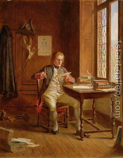

Bava Metzia 20 - The Found Documents That Are Returned
If one found letters of assignement (official letter stating that a property was assessed and confiscated to satisfy a debt), letters of sustenance (certifying that a husband has agreed to provide for his stepdaughter's support), certificates of Halitza or any act of the court, he should return these to the party named in them to receive the document.
There is no concern here that the documents were written in advance, because the courts do not draw documents in advance.
If one found a loan document belonging to others among his documents, it should be set aside until Elijah the Prophet comes and resolves its ownership.
Test your knowledge of the daf